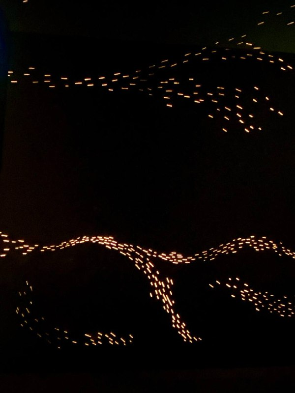

Стресс холатидан халос бўлиш учун 7 кўникма

1. Тўфонни тўхтатиш сизнинг қўлингиздан келмайди, шундай экан уринишни тўхтатинг. Аввал ўзингиз тинчланинг, тўфон ўзи албатта тинчланади. Хотиржам бўлинг!
2. Негативга қанчалик этиборингнизни кам қаратсангиз, шунчалик сизнинг ҳаётингиз тинч бўлади. Позитивга мосланинг!
3. Хаётни борича қабул қилинг, майда нарсалардан завқ олишни ва шукуроналикни туйинг. Ўзингиз таъсир эта олмайдагин холатларга сизнинг асабингиз толаларини безовта бўлишига йўл қўйманг. Шокир бўлинг!
4. Сиз батамом комил ёки идеал инсон бўла олмайсиз, унга интиласиз холос.
5. Баъзида хаётимизда юз берадиган нохушликлар бизни яхшилик сари етаклаш хусусиятига эга. Ойнинг 15 ёруғ бўлса 15 қоронғу!
6. Улғайганим сари барча нарса фақатгина ўзимга боғлиқлигини англайман. Барча натижага ўзингиз эришасиз!
7. Вахима - сиз барча хаётий масалаларга бирданига ойдинлик киритишга уринишингиз натижасидир!
Хаётда шошилманг!
Сизга кўнгил хотиржамлигини тилайман!